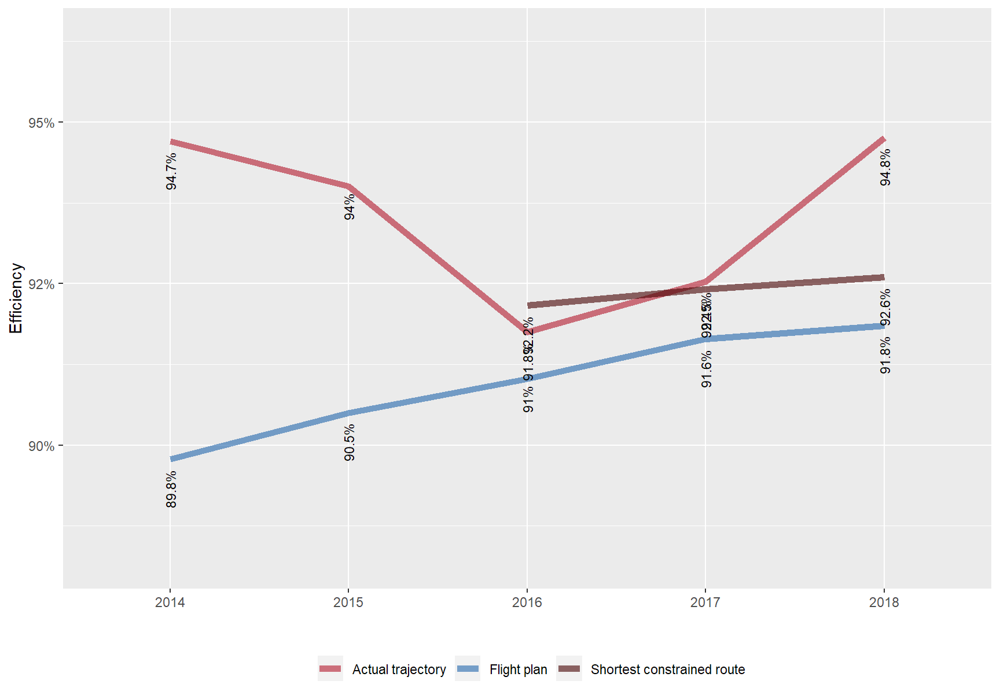
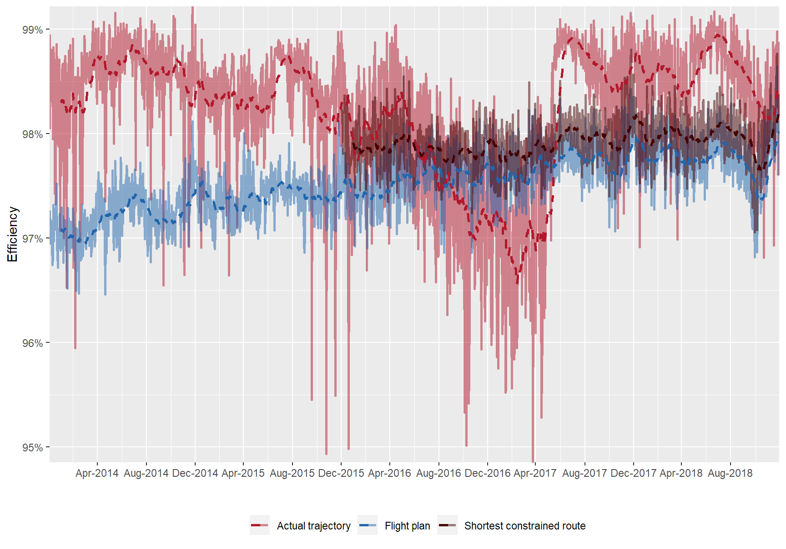
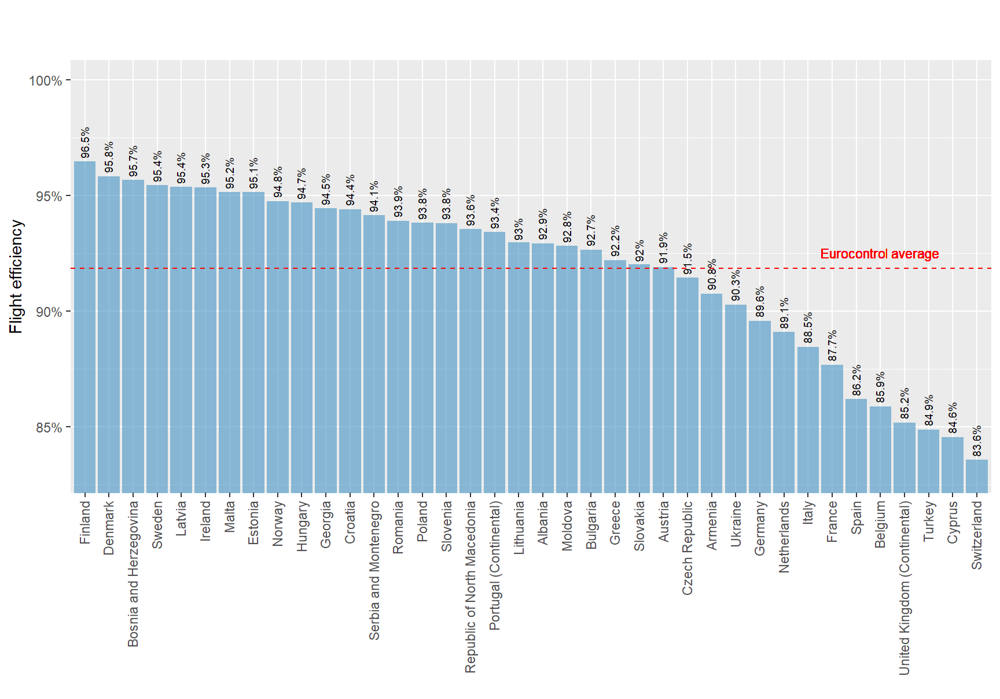
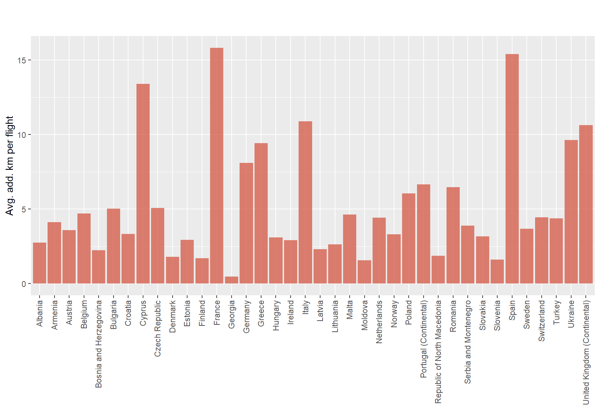
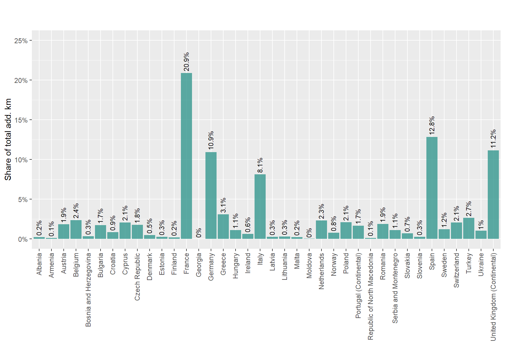
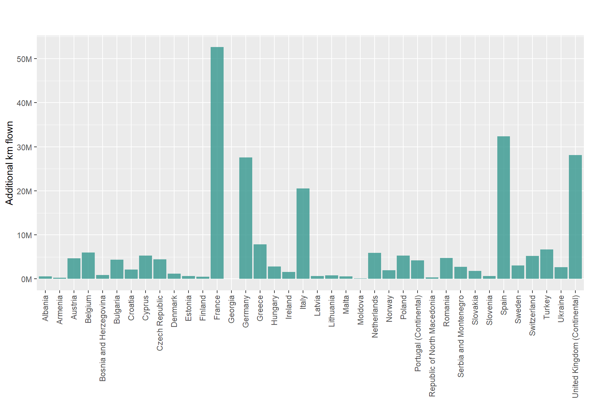

5 Environment
Source : PRU ANS Performance Data Portal
The data in this section is from the PRU ANS performance data portal (data section).
It is available at: http://ansperformance.eu/data/performancearea/
5.1 Horizontal flight efficiency

Figure 5.1: Horizontal en-route flight efficiency - (Norway).

Figure 5.2: Horizontal en-route flight efficiency - (Norway).

Figure 5.3: Horizontal en-route flight efficiency by State (actual trajectories - 2018).
- Horizontal en-route flight efficiency (actual trajectory) was 91.9% in the EUROCONTROL area in 2018.

Figure 5.4: Horizontal en-route flight efficiency by State (actual trajectories - 2018).

Figure 5.5: Horizontal en-route flight efficiency by State (actual trajectories - 2018).

Figure 5.6: Horizontal en-route flight efficiency by State (actual trajectories - 2018).